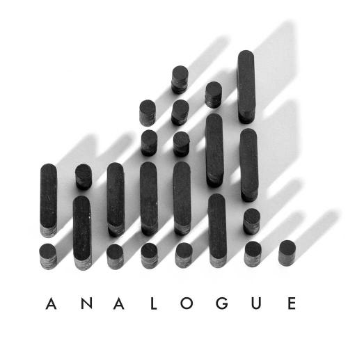
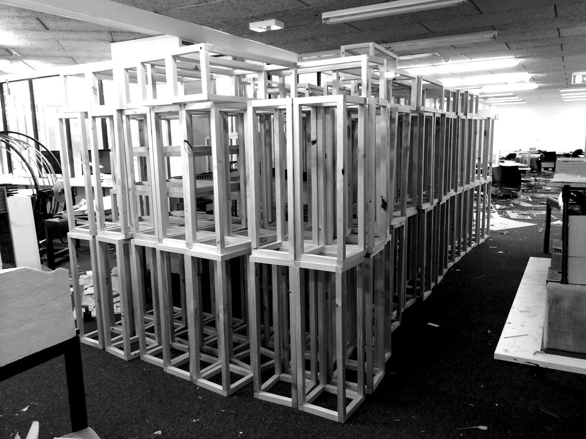

On the 5th of December, there will be the Architecture Graduate Exhibition at the University of Sydney. Yes, that's right, my Bachelors degree is over! But before I move on to Masters, other projects, and life, I would like to dedicate a post to the exhibition itself.
The Architecture Graduate Exhibition is an annual event which showcases the work of all the graduating students. This year, it'll feature the the graduating Bachelors, who show projects tackling the controversial redevelopment of Flinders Street Station in Melbourne, and the graduating Masters, who'll showcase three distinct projects. Our organising team of five including myself are happy to present "ANALOGUE" (that's an artsy theme, in case you haven't guessed).

If you are available in Sydney on the 5th of December, be sure to drop in at the Wilkinson Building at 148 City Road around 6PM for live music (which I shall participate), free booze (which I shall graciously donate), and perhaps some design here and there.
This year shall also feature the release of the first online graduate exhibition catalogue. This'll be reused in future years. It's still under wraps but will be released at UsydArchExhibition.com once I have enough entries. You may also follow our Analogue Architecture Exhibition Facebook page where we post ongoings - you might witness the 200 plinths we built (don't mind the mess in the backdrop, that's the natural state of a creative environment).

Back to work!